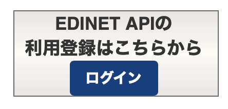
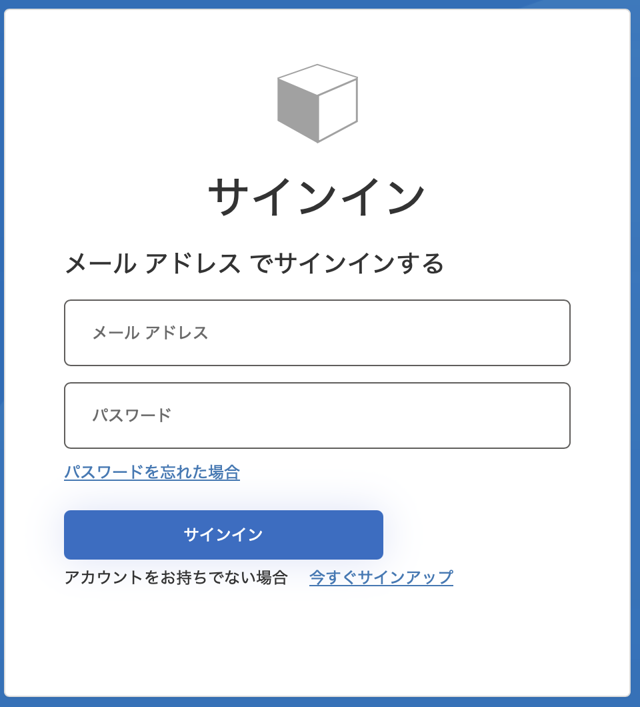
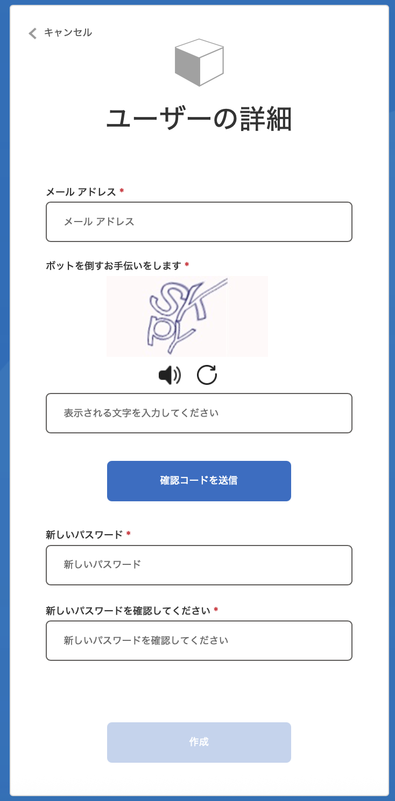
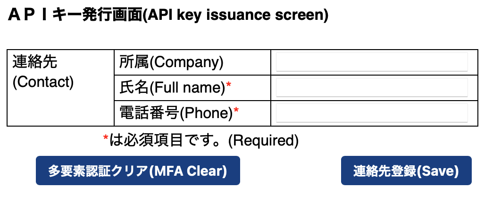

EDINET API キーの取得
EDINET API (v2) の利用には API キー (Subscription-Key) が必要です. キーは EDINET のサイトで誰でも無料で取得できます. 手順の詳細と最新情報は公式資料を参照してください.
- EDINET 書類検索 (閲覧サイト)では, API で取得する書類をブラウザで検索・閲覧できます. どんなデータが取れるのか, まずこのページで確認してください.
- EDINET API 関連資料には, 仕様書と利用規約があります.
- EDINET API 仕様書 (Version 2) は, EDINET API 関連資料のページから PDF をダウンロードしてください.
手順は次の通りです (EDINET API 仕様書 Version 2 の「2-3 アカウントの作成と API キーの発行について」に基づく).
手順1: サインイン画面の表示
EDINET の閲覧サイトに接続し, 「EDINET APIの利用登録はこちらから」の「ログイン」ボタンをクリックします.

手順2: サインアップ画面の表示
サインイン画面が表示されます. アカウントをまだ持っていないので, 下部の「今すぐサインアップ」のリンクをクリックします (2 回目以降はこの画面からサインインします).

手順3: 確認コードの送信
サインアップ画面 (ユーザーの詳細) で, 最上部の入力欄にメールアドレスを入力し, 「ボットを倒すお手伝いをします」の下に表示された画像認証の文字を二番目の入力欄に入力して, 「確認コードを送信」をクリックします. 入力したメールアドレスに確認コードが記載されたメールが届きます.

確認コードのメールは @microsoftonline.com のアドレスから届きます (EDINET の認証基盤は Microsoft のサービスを利用しています). 届かない場合は迷惑メールフォルダを確認してください. 大学のメールアドレスでフィルタが厳しい場合は, 受信許可設定が必要なことがあります.
手順4: コードの確認とアカウントの作成
メールで受信した確認コードを入力欄に入力し「コードの確認」をクリックします. その後, 同じ画面でパスワードを 2 回入力して「作成」をクリックするとアカウントが作成されます. パスワードは 12 文字以上で, 英数字と記号が使えます.
手順5: 多要素認証 (電話番号の登録)
アカウント作成後, 多要素認証画面が表示されます. 国コード (日本: Japan +81) を選び電話番号を入力して, SMS で届く確認コードを入力します (音声通話による確認も選べます). 電話番号はハイフンや空白の区切り文字を含めずに入力してください (例: 09012345678).
手順6: APIキーの発行
多要素認証でのサインイン後に API キー発行画面が表示されます. 連絡先 (所属・氏名・電話番号) を入力して「連絡先登録」をクリックし, 確認メッセージで「OK」を押すと, API キーが画面に表示されます.

API キー発行画面はポップアップで開きます. ブラウザのポップアップブロックが有効だと発行画面が開かず, 白い画面しか表示されないことがあります. その場合は EDINET のサイトをポップアップ許可サイトに追加してください. 許可の設定方法はブラウザ (Edge / Chrome / Safari など) によって異なります. EDINET API 仕様書 (Version 2) の「2-2 ポップアップ許可サイトへの追加」に手順が記載されているので, そちらを参照してください (一度許可すれば以後の発行・削除画面は継続して利用できます).
表示されたキーをコピーして安全な場所に保存してください. 以後の API リクエストでこのキーを使います (初回に発行したキーを継続して利用できます. 再表示はサインインし直せば可能です).
API キーを保管するときは, API キーの管理の注意を参照してください.
- 本稿で示すコードでは環境変数
EDINET_API_KEYから読み込む形にしています. ターミナルでexport EDINET_API_KEY=<自分のキー>を実行してからスクリプトを動かしてください. - 万一キーを共有してしまった場合は, EDINET のページからキーを再発行してください.